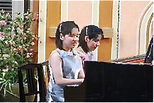

| 日本同盟基督教団 上大岡聖書教会 Kamiooka Bible Church |
チャペルコンサートのお知らせ
◎2010年10月2日、木村りえ・りさ姉妹のチャペルコンサートを行います。
◎演奏曲目≪ピアノソロ≫木村 りさ F. ショパン ノクターン第2番変ホ長調Op.9-2 F. ショパン ワルツ集より 第4番ヘ長調Op.34-3『子猫のワルツ』 第6番変ニ長調Op.64-1『小犬のワルツ』 第5番変イ長調Op.42『グランドワルツ』 木村 りえ L. V. ベートーヴェン ピアノソナタ嬰ハ短調「幻想曲風ソナタ」 Op.27 ��2『月光』 1. Adagio sostenuto (attacca) 2. Allegletto 3. Presto agitato ＝お話＝ ≪ピアノ連弾≫ 木村りえ、木村りさ J. ブラームス 「ハンガリー舞曲集」より 第1番 ト短調 第4番 ヘ短調 第5番 嬰ヘ短調 第6番 変ニ長調 と き：2010年10月2日(土) 13:00開演(12:30開場) ところ：同盟基督教団 上大岡聖書教会  ◎プロフィール木村 りえ（姉）福岡県北九州市出身、筑波大学附属盲学校中・高等部音楽科卒。フェリス女学院大学音楽学部器楽学科ピアノ専攻卒業、同大学ディプロマコース修了。1992年全日本盲学生音楽コンクール優勝、2003年「オーケストラ協演の夕べ」にてモーツァルト・ピアノ協奏曲を共演、2004年卒業記念演奏会に出演、2006年「ヤングピープルス・コンサート」にて三石精一指揮東京ユニフィルと共演。 2009年山田和樹指揮神奈川フィルハーモニー管弦楽団と共演。 これまでに戸野明子、尾畑瑞香、西川秀人、岩城美智子、遠藤美恵子、大学にて堀由紀子の各氏に師事。2002年5月から7月にはシュテファン・ゼーバス客員教授のレッスンを受講。 木村 りさ（妹）姉りえと同じく高校までは同音楽学科卒。国立音楽大学音楽学部器楽学科ピアノ専攻卒業。2001年第51回ヘレンケラー記念音楽コンクール優勝、2002年教育連盟ピアノオーディション大学の部・奨励賞、2004年卒業演奏会出演、同年11月日比谷スタインウェイサロン・松尾ホールにてリサイタル、2006年「多摩フレッシュ・コンサート」において審査員特別賞、同年第6回堺国際ピアノコンクール第3位ファイナリストとして大阪チェンバーオーケストラとモーツァルト・ピアノ協奏曲を共演、堺市民芸術祭に出演。これまでに高校まではりえと指導者も同じく、大学にて拝田正機氏に師事。2003年 6月ケマル・ゲキチ氏公開レッスン受講。 りえ・りさ Duo1991年ピティナピアノコンペティションデュオ初級全国大会奨励賞、1997年ピティナピアノコンペティションデュオ上級全国大会第4位。 姉妹は大学卒業後、それぞれのソロ活動に加えデュオ・ソロを組み合わせた演奏スタイルにて活動。市民コンサートや各地の学校や教育委員会主催の「演奏と講演」にソロとデュオで出演。音楽への愛がこもった真摯な演奏とウイットに富んだ語りが「癒される演奏家」と好評（2008年静岡新聞評）。 ＜その他＞・1996年フランス大使館にて日仏親善行事演奏会に出演・2008年霞会館サロンコンサート、皇后陛下御前にて演奏 ・2008年アメリカ大使公邸、日米婦人クラブFALL TEAにて演奏 ・2009年故郷北九州市小倉にて自主企画コンサート第1回開催 |
| 日本同盟基督教団 上大岡聖書教会 主任牧師：徳梅陽介 伝道師：鈴木大輝 〒234-0052 横浜市港南区笹下 7-13-2 �� 045-845-4536 |